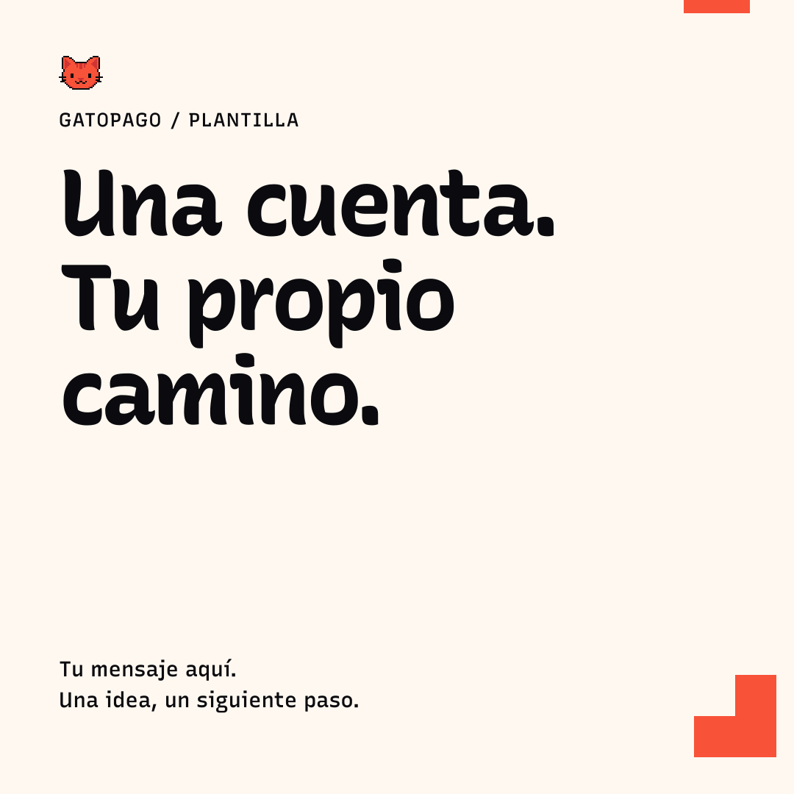
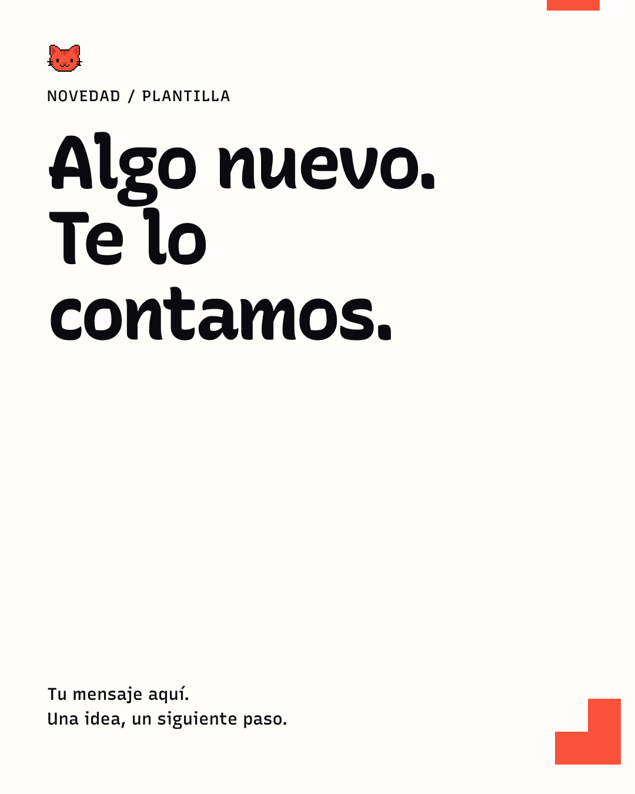
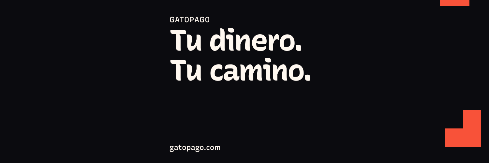

post cuadrado
1080 × 1080 · Tu mensaje aquí. Una idea, sin promesas sin verificar.
Tres composiciones editoriales y un documento A4. Sustituye el copy en la fuente, regenera y revisa el resultado: no comprimas un párrafo dentro de un titular.

1080 × 1080 · Tu mensaje aquí. Una idea, sin promesas sin verificar.

1080 × 1350 · Describe qué cambió y para quién está disponible.

1500 × 500 · Plantilla editable · deja libre el recorte del avatar.
Formato editable HTML, tipografía local y estilos de impresión.
Abrir plantillaLas presentaciones existentes siguen pausadas. Estas plantillas no afirman disponibilidad, cobertura, rentabilidad ni seguridad financiera.